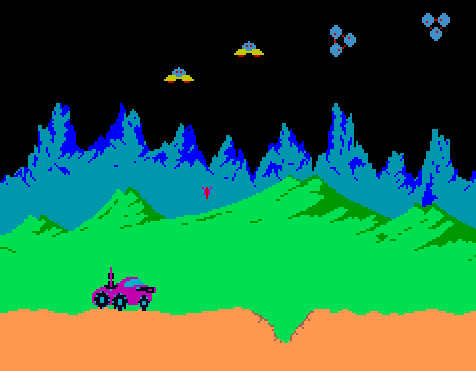

I was tasked with playing a classic arcade game from the Internet Arcade, a web-based library of emulated arcade games. I arbitrarily chose a game called Moon Patrol.
Moon Patrol is a side-scrolling shooter game where the player attempts to pilot a continuously moving purple vehicle (a lunar rover?) from the start, Point A, to the end, Point Z. Each letter of the alphabet exists, with each serving as a mini-checkpoint of sorts. There are 5 “stages,” spaced mostly equally between A and Z, starting at A, E, J, O, and T, with different characteristics.
Depending on the stage, various obstacles obstruct the player, including moon rocks, holes in the floor, landmines and UFOs that can shoot the player. On collision, this causes the loss of one of three starting lives. Upon the loss of all three lives, the game is over—unless the player inserts a coin to continue the game from the last checkpoint.
In the above screenshot are some of the aforementioned obstacles. In the bottom mid-left is the purple player rover. The yellow UFOs in the top middle shoot purple missiles that can hit the player directly, like the missile near the middle of the image. The triangular UFOs on the right side shoot missiles that create holes in the ground, like the triangular gap in the light-colored martian surface at the bottom.
The actions the player can take to overcome these obstacles are jumping, shooting, and moving left and right. Jumping and shooting are simple, except that shooting causes the rover to shoot bullets both to the right (forward) and up. Moving is more complicated, though, and dare I say unintuitive.
The rover constantly moves to the right at a constant speed. In many modern games such as Celeste or Hollow Knight, the press of a directional key corresponds to instant, responsive feedback in terms of left-right movement on the screen. Moon Patrol offers no such luxury. Holding the left or right keys slowly accelerates the rover from its constant speed to a slower or faster speed. When releasing the key, it slowly returns to its default speed. The screen scroll mostly follows the speed of the rover, but not fully, so the effective horizontal range of the rover on the screen is between about 1/6 and 1/2 of the screen, depending on its speed.
It is hard to convey in words just how difficult the combination of all the gameplay elements ends up being. Do you remember those UFOs that shoot purple projectiles at the player? The projectiles themselves move horizontally at a constant speed, so they travel at a constant speed horizontally on the screen. If they have the same horizontal speed as the player, they vertically remain locked on the screen, unless the player applies some sort of acceleration to the rover. Due to this, some missile shots require a large amount of foresight to dodge, and may even (subjectively) feel impossible to get away from due to the rover’s small effective horizontal range on the screen.
The first bit of the beginner course (from A to J) mainly consists of dealing with UFOs, jumping over holes, and jumping over or shooting rocks that are in the path. Starting from point J, there is a welcome break from that with the introduction of landmines, creating a pure landmine jumping section. I only got a bit past that—about halfway through the beginner course—before I stopped playing, after having to insert coins and continue about 10 times (a total of 30 extra lives!). Each life is rather short when you’re bad at the game, as you can run into something pretty easily. The game just requires a surprising amount of foresight and patience, which I figure is an intended feature of old arcade game design.
Arcade games require a lot of time and resources to create, as actual arcade cabinets that require physical resources have to be built, and shipped to physical arcades to be played at. Because of the large cost, these games should have a lot of replayability in order to create adequate return on investment. One way to do this is through difficulty; if a game is difficult to complete, people will naturally have to play more to gain the skill to complete it.
I am definitely lucky to have played on an emulator. While a joystick for movement might have been more intuitive for the acceleration movement, I would have had to spend quite a bit of money to play even as much as I did, with how many times I had to use the continue feature. And it would be even worse if I only had a limited amount of time to play in a session, due to things like other people waiting or financial constraints. Because there is no way to continue from the middle of a course, if I got halfway through the course in one session and had to leave, I would have to restart from the beginning just to see new content. I am likely to improve over time, costing less coins per attempt, but under the arcade model, each new session incurs an upfront cost in both coins and time as the player has to replay everything they have already completed.
In this sense, there are a lot of advantages to having played on an emulator. For one, I got to play Moon Patrol from the comfort of my own home. I don’t even know whether I could have had physical access to a Moon Patrol arcade cabinet—does a working cabinet even still exist for such an old game? I also didn’t have to spend any money to do so. And I could do all of this for a variety of other old arcade games too. It is incredibly convenient.
There are some advantages playing on the arcade cabinet would bring, though. The controls are more intuitive, as they are laid out right in front of you. It may also be more engaging with a larger screen and louder sounds from a speaker. Another factor to consider is the atmosphere that being in an arcade environment may bring. Other people might watch your gameplay, heightening the (social) stakes, or you can watch other people’s gameplay, learning from them and rooting for them. More generally as well, the arcade environment also allows you to serendipitously see other arcade games’ previews or cabinets and try them out if they interest you in a way that looking at a listing of games might not.
I have gone on far too long with this post—oops! However, I had a fun experience trying out Moon Patrol and thinking about these concepts in theory, especially since I already occasionally play arcade rhythm games like DDR. I will certainly be making more posts like this over the course of the semester.